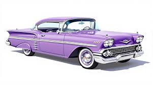

A história do Impala SS 1966 começa no auge do Impala como carro mais vendido dos EUA (recorde em 1965). Em 1966 a Chevrolet tratou o SS como linha própria, com acabamento esportivo — bancos Strato-bucket finos, painel e console especiais, rodas e pneus sob medida. Estilisticamente, o modelo perdeu as tradicionais lanternas redondas triplas, adotando lanternas retangulares que envolviam as laterais, e ganhou opção de teto de vinil. Foram produzidos 119 mil SS, frente a mais de 1 milhão de Impalas no ano anterior, sinal de que o público migrava para o novo Caprice ou para muscle cars menores. Na mecânica, a grande novidade foi o motor 427 pol. (7.0 L) vindo do Corvette, além dos V8 327 e 396. Era o último ano em que o Impala SS brilhou como símbolo de potência full-size antes de ser ofuscado pelas mudanças do mercado. Hoje é lembrado como um ícone de transição entre o luxo dos anos 50 e a era muscle
1.Chevrolet Impala (1966)

Graciosidade sob pressão.